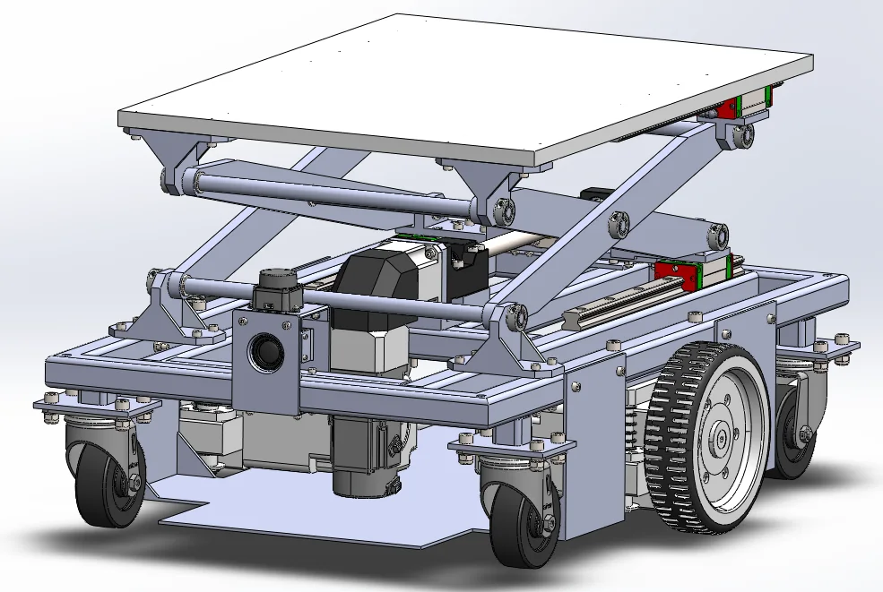
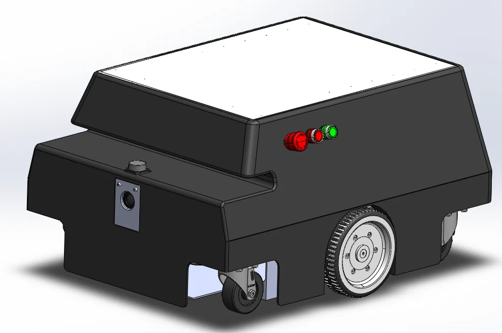
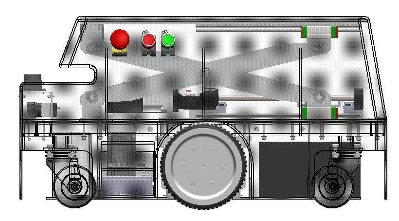
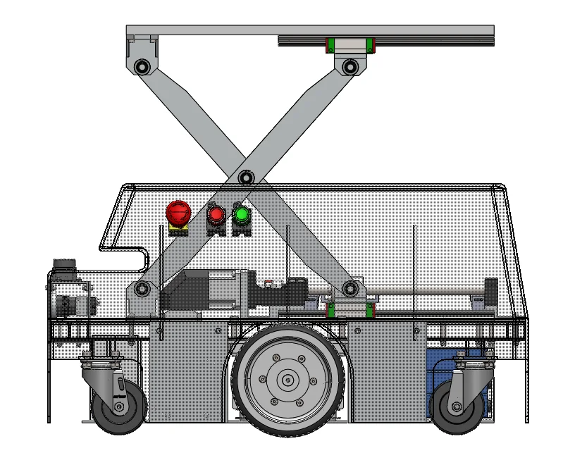
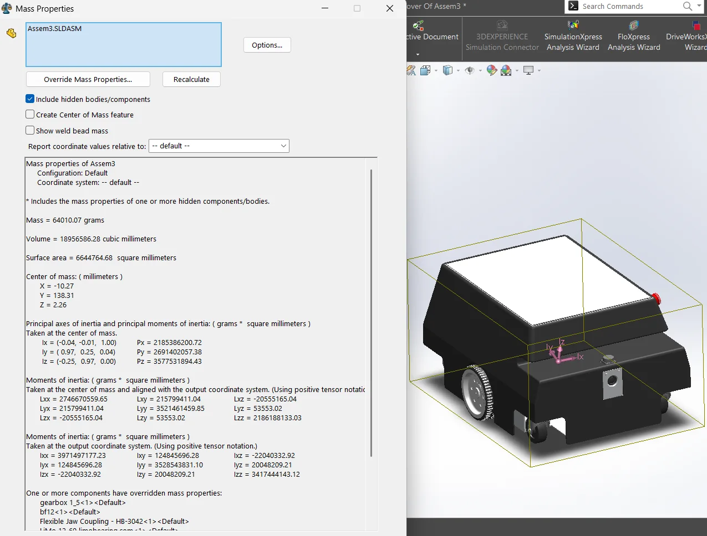
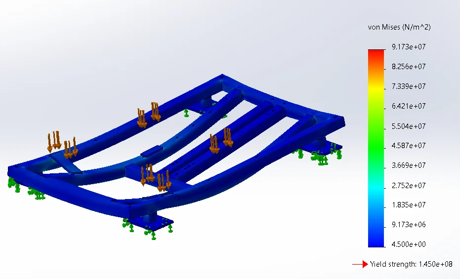
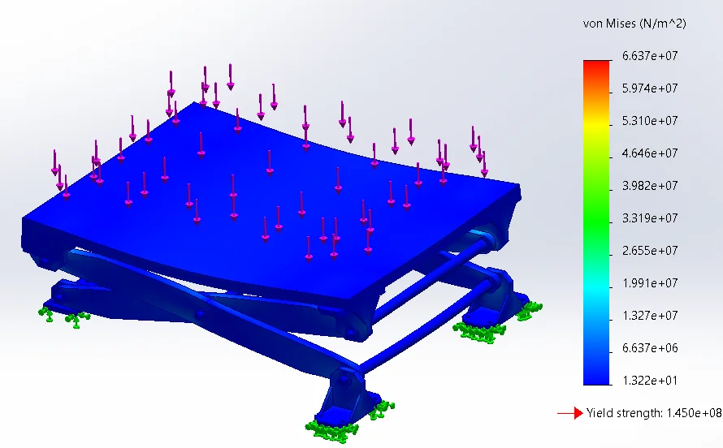
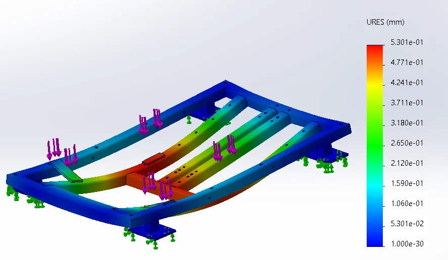
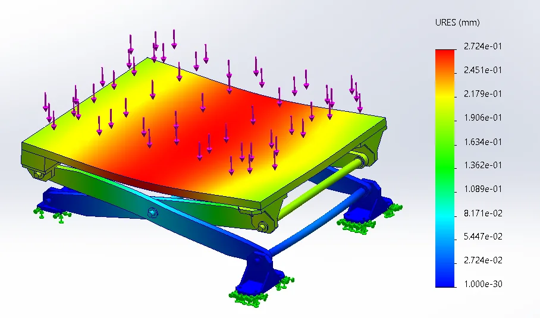

Đồ án Robotics & Digital Twin
Robot tự hành nâng kệ chui gầm
Thiết kế hệ thống cơ khí, điện và xây dựng bản sao kỹ thuật số cho AMR logistics có cơ cấu nâng kệ. Thuật toán điều hướng và ghép nối được kiểm chứng trong môi trường mô phỏng Gazebo.

Tổng quan đồ án
Đồ án nghiên cứu, thiết kế cơ sở và mô phỏng AMR dạng chui gầm phục vụ logistics. Phạm vi thực hiện bao gồm thiết kế cơ khí 3D/2D, kiến trúc hệ thống điện và xây dựng chương trình mô phỏng dùng Gazebo trên hệ điều hành Ubuntu ROS2 để kiểm chứng thiết kế, thuật toán trước khi chế tạo phần cứng.
Hệ thống điều hướng dựa trên ROS 2 Humble với Nav2, AMCL và BehaviorTree. Trong mô phỏng, robot nhận diện AprilTag để tiếp cận chính xác và chui gầm kệ; sai số góc hướng mục tiêu trong các bài kiểm tra là dưới 20mm và 5°.
Thiết kế 3D & cơ cấu nâng
Các góc nhìn mô hình CAD và cụm nâng kệ của robot





Mô phỏng bền & chuyển vị
Kết quả phân tích khung robot và bàn nâng trong bộ tài liệu đồ án




Video mô phỏng hoạt động
Robot tiếp cận và thao tác trong môi trường mô phỏng Gazebo